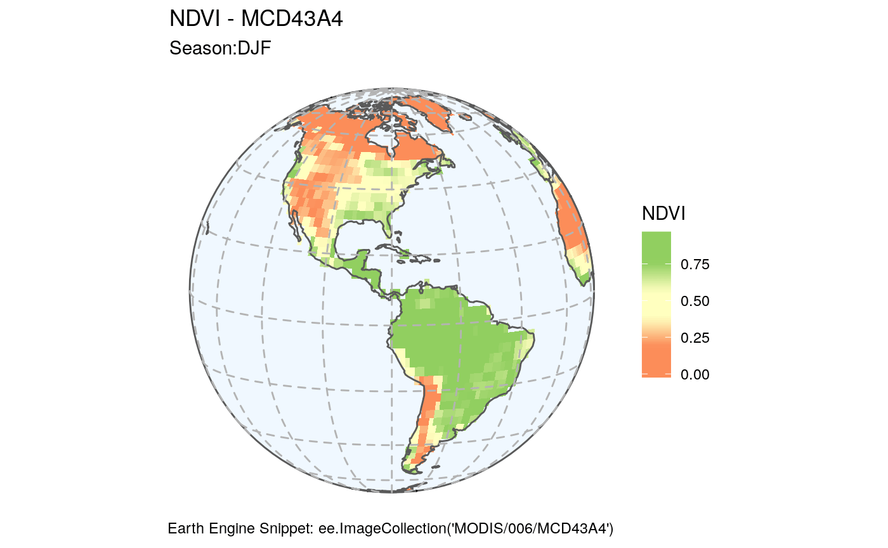

# WORLD SEASONAL NDVI - Animation
library(sf)
#> Linking to GEOS 3.5.1, GDAL 2.1.2, PROJ 4.9.3
library(rgee)
#> Loading required package: reticulate
#> ee is a reserved word for the rgee package, try ee_restart() to reattach
library(stars)
#> Loading required package: abind
library(dplyr)
#> Registered S3 method overwritten by 'dplyr':
#> method from
#> print.location geojsonio
#>
#> Attaching package: 'dplyr'
#> The following objects are masked from 'package:stats':
#>
#> filter, lag
#> The following objects are masked from 'package:base':
#>
#> intersect, setdiff, setequal, union
library(lwgeom)
#> Linking to liblwgeom 2.5.0dev r16016, GEOS 3.5.1, PROJ 4.9.3
library(mapview)
library(cptcity)
library(ggplot2)
library(rnaturalearth)
library(gganimate)ee_Initialize() # Initialize earth engine
#> Requesting Earth Engine authorization ... DONE
ndvi_palette <- cpt(pal = "cb_div_RdYlGn_03") # palette
modis <- ee$ImageCollection("MODIS/006/MCD43A4")
world_map <- ne_countries(returnclass = "sf")
land <- ee$FeatureCollection("USDOS/LSIB_SIMPLE/2017")calc_ndvi <- function(img) {
ndvi <- img$normalizedDifference(c("Nadir_Reflectance_Band2", "Nadir_Reflectance_Band1"))
return(img$addBands(ndvi$rename("ndvi"))$select("ndvi"))
}create_orto_basemap <- function(world_map, ortho_proj,lat) {
circle <- st_point(x = c(0, 0)) %>%
st_buffer(dist = 6371000) %>%
st_sfc(crs = ortho_proj)
circle_longlat <- circle %>% st_transform(crs = 4326)
# circle_longlat cannot be used as it is
# You must decompose it into a string with ordered longitudes
# Then complete the polygon definition to cover the hemisphere
if (lat != 0) {
circle_longlat <- st_boundary(circle_longlat)
circle_coords <- st_coordinates(circle_longlat)[, c(1, 2)]
circle_coords <- circle_coords[order(circle_coords[, 1]), ]
circle_coords <- circle_coords[!duplicated(circle_coords), ]
circle_longlat <- st_linestring(circle_coords) %>% st_sfc(crs = 4326)
# Rebuild line
if (lat > 0) {
rectangle <- list(rbind(
circle_coords,
c(X = 180, circle_coords[nrow(circle_coords), "Y"]),
c(X = 180, Y = 90),
c(X = -180, Y = 90),
c(X = -180, circle_coords[1, "Y"]),
circle_coords[1, c("X", "Y")]
)) %>%
st_polygon() %>%
st_sfc(crs = 4326)
} else {
rectangle <- list(rbind(
circle_coords,
c(X = 180, circle_coords[nrow(circle_coords), "Y"]),
c(X = 180, Y = -90),
c(X = -180, Y = -90),
c(X = -180, circle_coords[1, "Y"]),
circle_coords[1, c("X", "Y")]
)) %>%
st_polygon() %>%
st_sfc(crs = 4326)
}
circle_longlat <- st_union(st_make_valid(circle_longlat), st_make_valid(rectangle))
}
# A small negative buffer is necessary to avoid polygons still disappearing in a few pathological cases
# I should not change the shapes too much
visible <- st_intersection(world_map, st_buffer(circle_longlat, -0.09)) %>%
st_transform(crs = ortho_proj)
broken_reason <- st_is_valid(visible, reason = TRUE)
# First fix NA's by decomposing them
# Remove them from visible for now
na_visible <- visible[is.na(broken_reason), ]
visible <- visible[!is.na(broken_reason), ]
# Open and close polygons
na_visible <- st_cast(na_visible, "MULTILINESTRING") %>%
st_cast("LINESTRING", do_split = TRUE)
na_visible <- na_visible %>% mutate(npts = npts(geometry, by_feature = TRUE))
# Exclude polygons with less than 4 points
na_visible <- na_visible %>%
filter(npts >= 4) %>%
select(-npts) %>%
st_cast("POLYGON")
# Fix other broken polygons
broken <- which(!st_is_valid(visible))
for (land in broken) {
result <- tryCatch({
# visible[land,] <- st_buffer(visible[land,], 0) # Sometimes useful sometimes not
visible[land, ] <- st_make_valid(visible[land, ]) %>%
st_collection_extract()
}, error = function(e) {
visible[land, ] <<- st_buffer(visible[land, ], 0)
})
}
# Bind together the two tables
visible <- rbind(visible, na_visible)
visible %>%
"[["("geometry") %>%
st_buffer(.00001) %>%
st_union(quiet = TRUE) -> visible
output_ortho <- list(world_limits = circle, layer = visible)
return(output_ortho)
}LAT <- 10
LON <- -80
ORTHO <- "+proj=ortho +lat_0=%s +lon_0=%s +x_0=0 +y_0=0 +a=6371000 +b=6371000 +units=m +no_defs"
ORTHO_PROJ <- sprintf(ORTHO, LAT, LON)
WORLD_MAP <- create_orto_basemap(world_map, ORTHO_PROJ, LAT)
#> although coordinates are longitude/latitude, st_union assumes that they are planar
#> Warning in st_buffer.sfc(circle_longlat, -0.09): st_buffer does not
#> correctly buffer longitude/latitude data
#> dist is assumed to be in decimal degrees (arc_degrees).
#> although coordinates are longitude/latitude, st_intersection assumes that they are planar
#> Warning: attribute variables are assumed to be spatially constant
#> throughout all geometries
#> Warning in st_cast.sf(., "LINESTRING", do_split = TRUE): repeating
#> attributes for all sub-geometries for which they may not be constant
#> Warning in st_collection_extract.sf(.): x is already of type POLYGON.
#> Warning in st_collection_extract.sf(.): x is already of type POLYGON.
#> Warning in st_collection_extract.sf(.): x is already of type POLYGON.
#> Warning in st_collection_extract.sf(.): x is already of type POLYGON.
#> Warning in st_collection_extract.sf(.): x is already of type POLYGON.
#> Warning in st_collection_extract.sf(.): x is already of type POLYGON.
#> Warning in st_collection_extract.sf(.): x is already of type POLYGON.
#> Warning in st_collection_extract.sf(.): x is already of type POLYGON.
#> Warning in st_collection_extract.sf(.): x is already of type POLYGON.
#> Warning in st_collection_extract.sf(.): x is already of type POLYGON.modis_ndvi <- modis$
filterDate("2010-01-01", "2016-01-01")$
map(calc_ndvi)
# Export as a stars object
visParams <- list(min = 0, max = 1, bands = "ndvi")
region <- c(-180, -90, 180, 90)# get seasonal averages and clip to land features
djf <- modis_ndvi$filter(ee$Filter$calendarRange(12, 3, "month"))$max()
modis_djf_stars <- ee_as_thumbnail(x = djf, vizparams = visParams, region = region)
#> Registered S3 method overwritten by 'crul':
#> method from
#> as.character.form_file httr
#> Registered S3 method overwritten by 'geojsonlint':
#> method from
#> print.location dplyr
#> scale is missing, 256 is taken by default as dimension of x (from 1 to 256).
#> scale (delta): 1.40625 1.40625
#> Getting the thumbnail image from Earth Engine ... please wait
modis_djf_stars <- st_as_sf(modis_djf_stars[world_map])
#> although coordinates are longitude/latitude, st_intersects assumes that they are planar
modis_djf_stars <- st_make_valid(st_transform(modis_djf_stars, ORTHO_PROJ))
colnames(modis_djf_stars) <- c("NDVI", "geometry")
mam <- modis_ndvi$filter(ee$Filter$calendarRange(3, 6, "month"))$mean()
modis_mam_stars <- ee_as_thumbnail(x = mam, vizparams = visParams, region = region)
#> scale is missing, 256 is taken by default as dimension of x (from 1 to 256).
#> scale (delta): 1.40625 1.40625
#> Getting the thumbnail image from Earth Engine ... please wait
modis_mam_stars <- st_as_sf(modis_mam_stars[world_map])
#> although coordinates are longitude/latitude, st_intersects assumes that they are planar
modis_mam_stars <- st_make_valid(st_transform(modis_mam_stars, ORTHO_PROJ))
colnames(modis_mam_stars) <- c("NDVI", "geometry")
jja <- modis_ndvi$filter(ee$Filter$calendarRange(6, 9, "month"))$mean()
modis_jja_stars <- ee_as_thumbnail(x = jja, vizparams = visParams, region = region)
#> scale is missing, 256 is taken by default as dimension of x (from 1 to 256).
#> scale (delta): 1.40625 1.40625
#> Getting the thumbnail image from Earth Engine ... please wait
modis_jja_stars <- st_as_sf(modis_jja_stars[world_map])
#> although coordinates are longitude/latitude, st_intersects assumes that they are planar
modis_jja_stars <- st_make_valid(st_transform(modis_jja_stars, ORTHO_PROJ))
colnames(modis_jja_stars) <- c("NDVI", "geometry")
son <- modis_ndvi$filter(ee$Filter$calendarRange(9, 12, "month"))$mean()
modis_son_stars <- ee_as_thumbnail(x = son, vizparams = visParams, region = region)
#> scale is missing, 256 is taken by default as dimension of x (from 1 to 256).
#> scale (delta): 1.40625 1.40625
#> Getting the thumbnail image from Earth Engine ... please wait
modis_son_stars <- st_as_sf(modis_son_stars[world_map])
#> although coordinates are longitude/latitude, st_intersects assumes that they are planar
modis_son_stars <- st_make_valid(st_transform(modis_son_stars, ORTHO_PROJ))
colnames(modis_son_stars) <- c("NDVI", "geometry")
modis_djf_stars$season <- "DJF"
modis_mam_stars$season <- "MAM"
modis_jja_stars$season <- "JJA"
modis_son_stars$season <- "SON"
modis_season <- rbind(modis_djf_stars, modis_mam_stars, modis_jja_stars, modis_son_stars)ggplot(modis_season) +
geom_sf(
data = WORLD_MAP$world_limits,
fill = "aliceblue"
) +
geom_sf(lwd = 0, aes(fill = NDVI)) +
scale_fill_gradientn(colours = ndvi_palette) +
labs(
title = "NDVI - MCD43A4",
subtitle = "Season:{current_frame}",
caption = "Earth Engine Snippet: ee.ImageCollection('MODIS/006/MCD43A4')"
) +
geom_sf(data = WORLD_MAP$layer, fill = NA) +
coord_sf(crs = ORTHO_PROJ) +
theme(
panel.grid.major = element_line(
color = gray(.7), linetype = "dashed", size = 0.5
),
panel.ontop = TRUE,
panel.background = element_rect(fill = NA)
) +
# Here comes the gganimate code
transition_manual(season) +
enter_fade() +
exit_shrink() +
ease_aes("sine-in-out")
#> nframes and fps adjusted to match transition